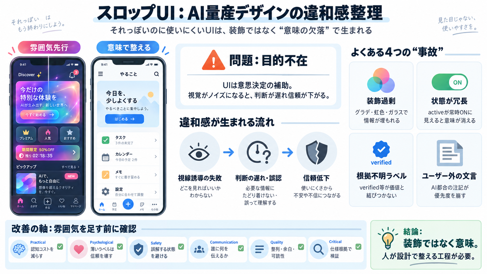

UX/UI design trends for 2026: calm interfaces, transparent AI and the end of visual theatrics
In recent years, we saw a strong focus on aesthetic experimentation, strategic immersion and engagement mechanics. We sa…

vibe-codedへ釘を刺す
見た目で負ける
意味が消える
違和感の因果
第一の事故
第二の事故
第三の事故
第四の事故
質の差が出る
ただし断定は危険
示唆（実務の型）
最後に一文
In recent years, we saw a strong focus on aesthetic experimentation, strategic immersion and engagement mechanics. We sa…
7. AI for App and Web Design and Development / Vibe Coding: Building functional applications through natural language pr…
Sign up Sign in Sign up Sign in Unknown user # UX/UI Design Trends for 2026 — From AI to XR to Vibe Creation Punit…
The most important web design trends in 2026 include AI-powered personalization, trust-based UX design, accessibility-fi…
Nostalgia isn’t just a vibe, it become a material. Designers are sampling from early OS UIs, 8-bit artifacts, Japanese w…